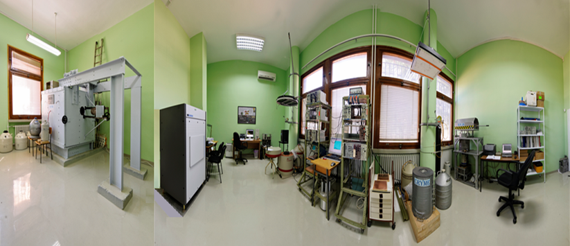

Laboratorija za Ispitivanje RAdioaktivnosti - LIRA

Navigacija
Laboratorija za ispitivanje radioaktivnosti uzoraka i doze jonizujućeg i nejonizujućeg zračenja
Laboratorija za etaloniranje gama-spektrometara i aktivnosti radioaktivnih izvora gama emitera